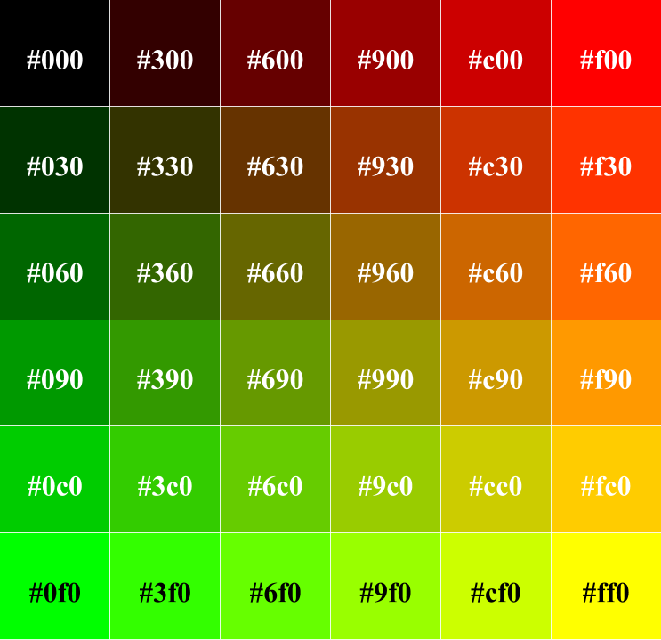
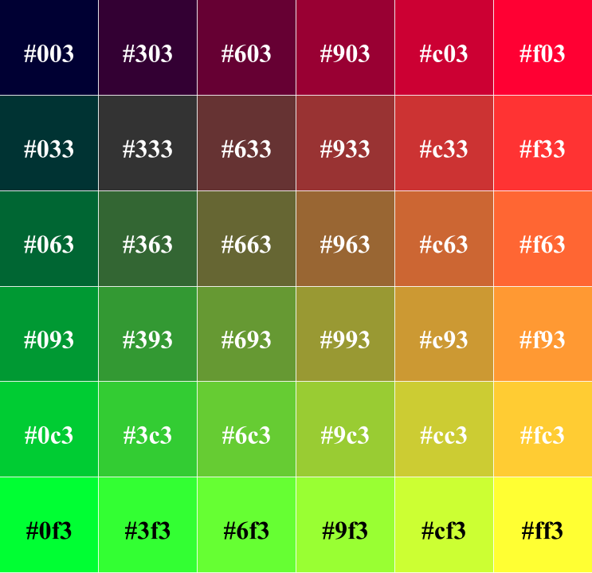
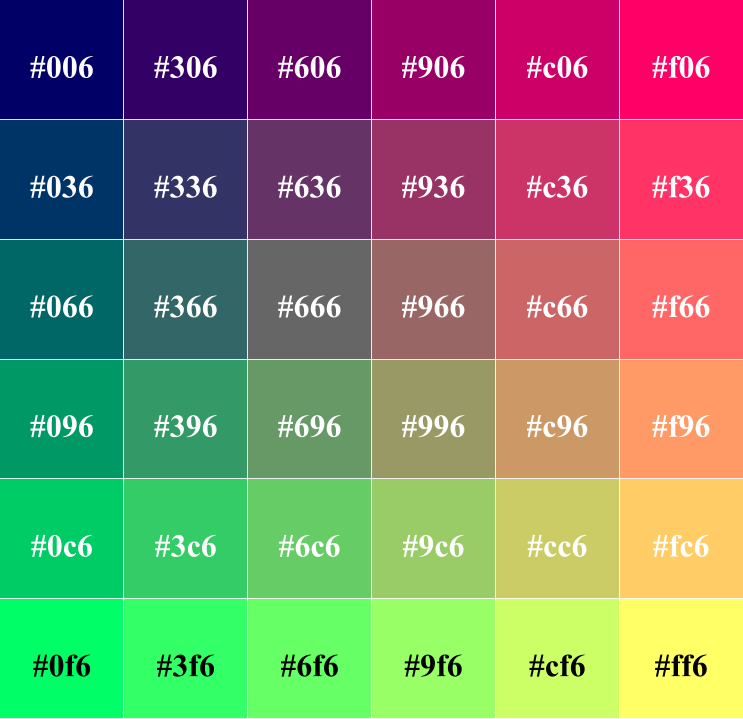
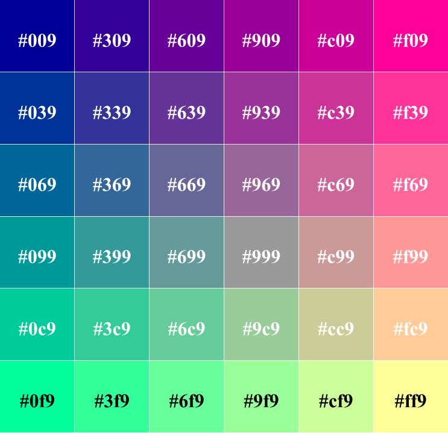
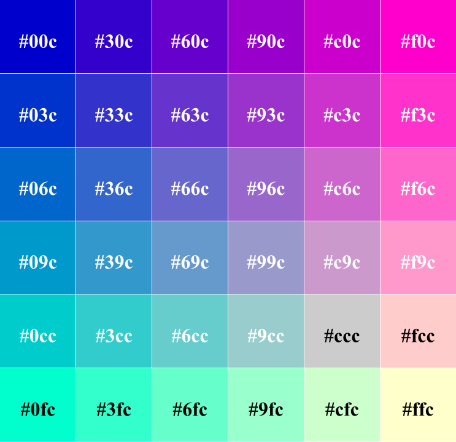
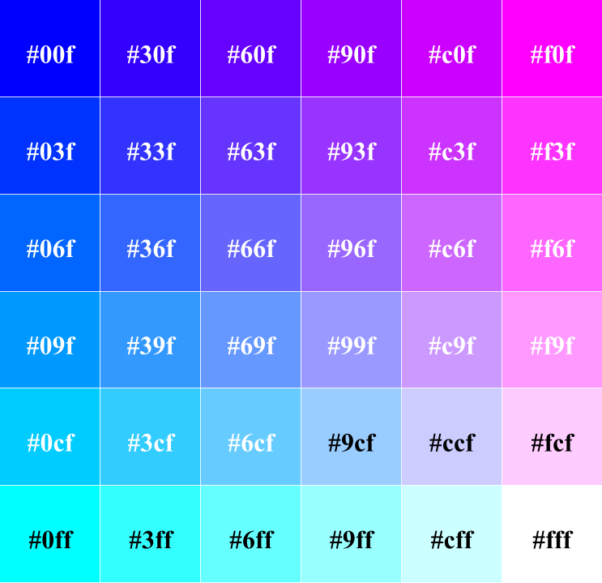

Base 6 Color Gamut
a.k.a. the Web Safe Colors
A base 6 color gamut allows for six possible levels (including absence) of each color in RGB. This allows for a complete palette of 63, or 216 colors.
This base 6 color space was an accepted standard for web design when 8-bit color monitors, which could only display 256 colors at once, were commonplace. Today, the majority of monitors can show millions more colors, thus eliminating the need for such a standard (Felke-Morris, 2017).
| Intensity | RGB Decimal | Hexadecimal |
|---|---|---|
| 0 (off) | 0 | 00 |
| 1 | 51 | 33 |
| 2 | 102 | 66 |
| 3 | 153 | 99 |
| 4 | 204 | cc |
| 5 (full) | 255 | ff |
Hexadecimal values in the chart below are written in shorthand.






Reference
Felke-Morris, T. (2017). Web development & design foundations with HTML5 8th edition. United States of America: Pearson.